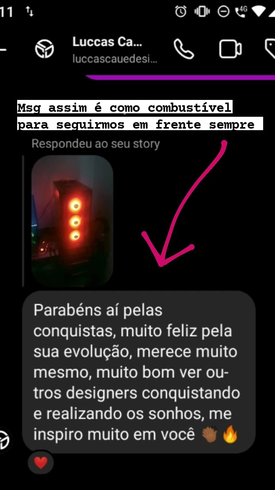
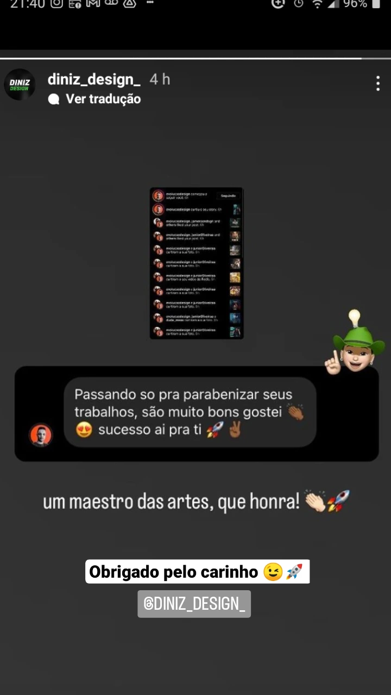
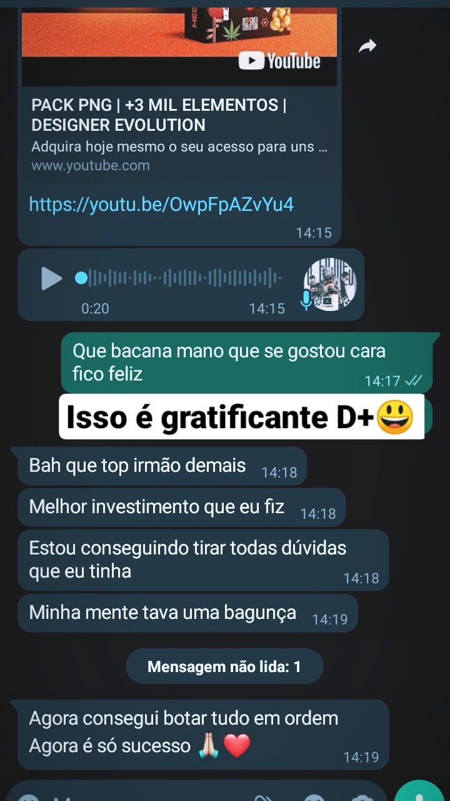
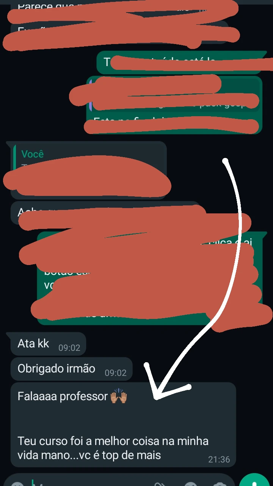

Arte gospel
Domingo Celebração
Portfólio, Photoshop e direção visual
Design gráfico com presença premium.
Artes, flyers, cursos e conteúdos para quem quer construir uma identidade visual mais profissional, criativa e estratégica.
0
anos de design
0
alunos ajudados
0
inscritos no YouTube
Photoshop
Flyers com presença
Contato direto
@jonatassdesigner
Photoshop
Flyers
Motion Design
Design Gospel
Social Media
Manipulação de imagem
Portfólio
Photoshop
Flyers
Motion Design
Design Gospel
Social Media
Manipulação de imagem
Portfólio
Portfólio visual
Uma seleção de artes reais criadas para marcas, igrejas e eventos.
Flyers, social media, artes gospel e composições com foco em impacto, leitura, acabamento e presença de marca.
Flyer institucional
Culto de Celebração
Composição e luz
Quinta do Renovo
Direção criativa
Quinta da Resposta
Social media
Tarde da Benção
Evento especial
Tempo de Florescer
Manipulação leve
Tarde da Benção
Treinamento completo
Designer Evolution PRO ensina mais do que um tipo de arte.
Você aprende do absoluto zero a criar flyers para artistas e eventos, social media, gospel, esportivos e manipulação de imagem. Tudo em um só lugar, com acesso vitalício e atualizações.
Ver detalhesSobre o designer
Jonatas Cardoso
Me chamo Jonatas Cardoso, tenho 29 anos, sou casado e moro em São Paulo. Trabalho com design gráfico e motion design há mais de 12 anos, ajudando designers a criarem artes mais profissionais e evoluírem de verdade.
Comecei no design depois de ter contato com Photoshop em um curso de informática. Com estudo, prática e consistência, transformei o design em profissão e hoje ensino outras pessoas a evoluírem no mercado criativo.
+12 anos
trabalhando com design gráfico
+370 alunos
evoluindo com cursos e conteúdos
São Paulo
base criativa
Cursos e produtos
Escolha o próximo passo para evoluir suas artes.
Produtos diretos ao ponto para melhorar composição, acabamento, criatividade e apresentação visual.
Curso de design gráfico
Designer Evolution PRO
Treinamento completo para criar flyers para artistas, eventos, social media, gospel, esportivos e manipulação de imagem.
Photoshop para igrejas
Revelação Criativa
Aprenda a criar artes gospel e flyers para igrejas com técnicas práticas no Photoshop.
Portfólio profissional
Portfólio Behance
Veja projetos, artes e trabalhos criados por Jonatas Cardoso em diferentes estilos e nichos.
Feedbacks reais
Alunos e designers que sentem evolução na prática.
Prints de mensagens, comentários e respostas de pessoas que acompanham os conteúdos e cursos do Jonatas.




Próximo passo
Pronto para criar artes com cara de profissional?
Conheça os cursos, veja os projetos e comece a evoluir seu design com conteúdos práticos e diretos ao ponto.